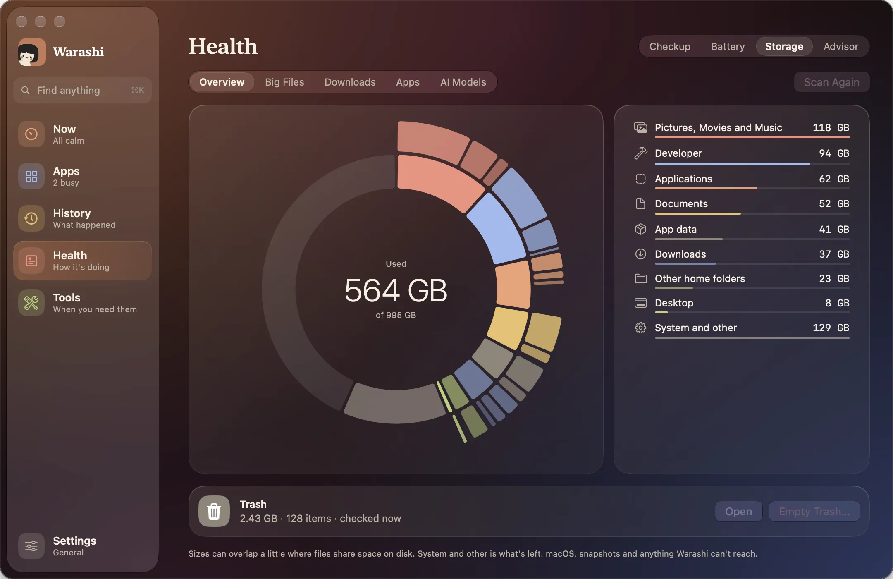

Disk yang penuh memperlambat Mac dan menghalangi pembaruan. Kabar baiknya, sebagian besar ruang biasanya ada di beberapa tempat saja. Begini cara menemukannya.
1. Mulai dari gambaran besarnya
Buka › Pengaturan Sistem › Umum › Penyimpanan. Bilah berwarna menunjukkan disk Anda menurut kategori, dan daftar di bawahnya memungkinkan Anda melihat isi masing-masing dan mengosongkan Tong Sampah.
2. Periksa tersangka yang biasa
- Unduhan dan Tong Sampah. Installer dan image disk lama menumpuk diam-diam. File di Tong Sampah tetap memakai ruang sampai dikosongkan.
- Foto, musik, dan video. Pustaka yang seluruhnya disimpan di Mac Anda bisa mencapai ratusan gigabyte. Optimalkan Penyimpanan Mac di iCloud menyimpan salinan yang lebih kecil di Mac Anda.
- Cadangan iPhone dan iPad. Cadangan perangkat lama bisa sangat besar. Kelolalah di Finder, di bawah Kelola Cadangan pada perangkat Anda.
- Alat pengembang. Data turunan Xcode, arsip, dan Simulator bisa mencapai puluhan gigabyte, begitu juga image dan mesin virtual Docker.
3. Apa itu “Data Sistem”?
Ini semua yang tidak masuk kategori lain: cache, log, snapshot lokal Time Machine, dan lainnya. Banyak di antaranya bersifat sementara, dan macOS membersihkannya saat butuh ruang, jadi tampak mengkhawatirkan tanpa benar-benar menjadi masalah.
4. Berapa banyak ruang kosong yang Anda butuhkan?
macOS memerlukan ruang untuk swap, pembaruan, dan cache. Di bawah sekitar 10–15% kosong, segalanya mulai melambat. Jika Anda sering mendekati garis itu, lihat Perlukah saya upgrade Mac?
5. Hati-hati dengan yang Anda hapus
Tetaplah pada file yang Anda kenali. Menghapus sembarang isi folder Library dapat merusak app atau menghilangkan datanya, dan cache yang Anda bersihkan sendiri biasanya muncul kembali.

